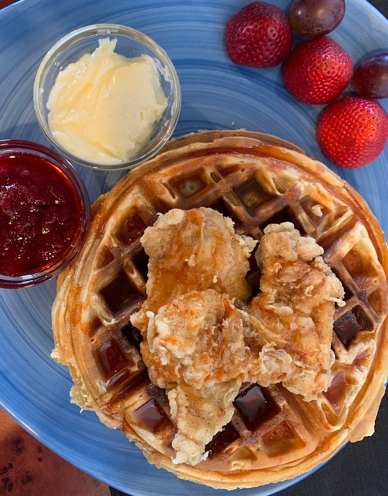
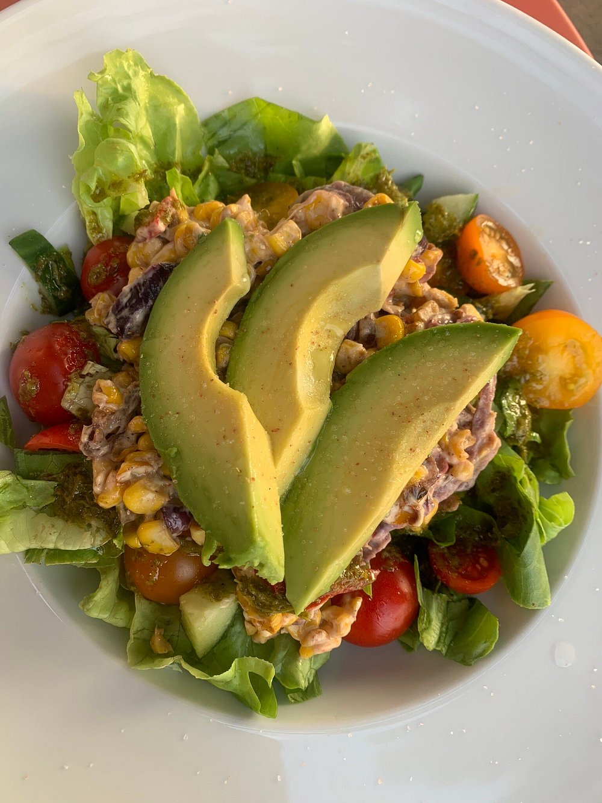
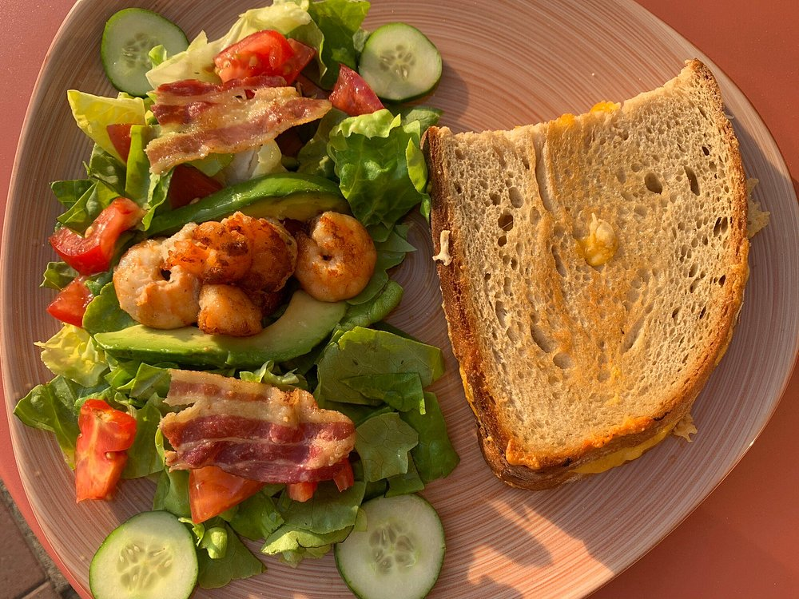
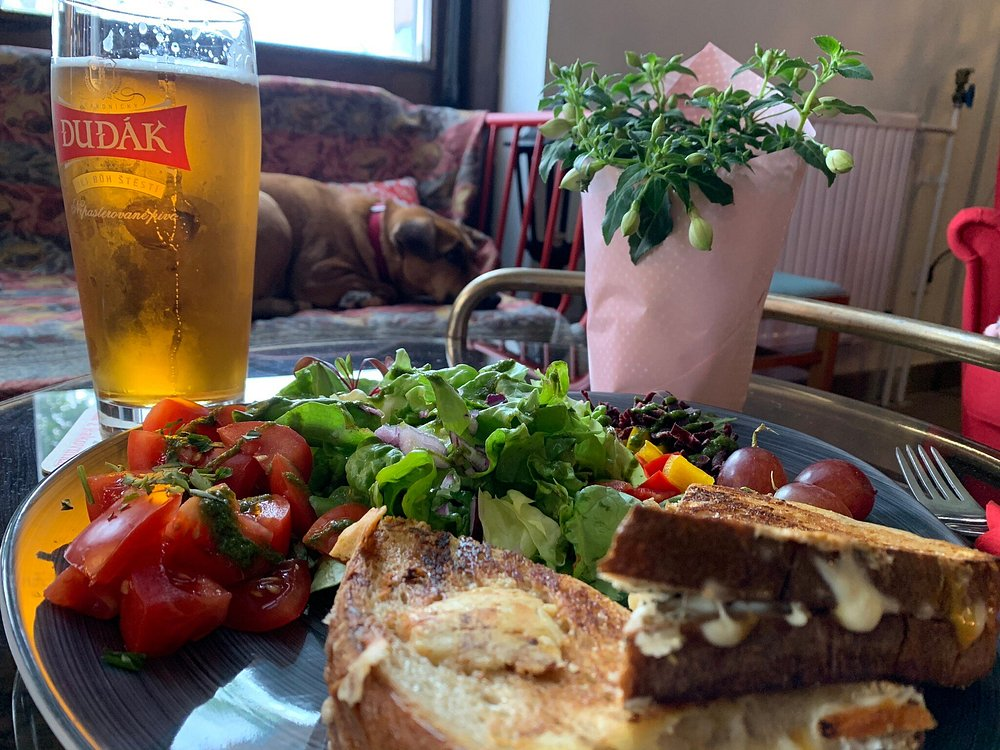
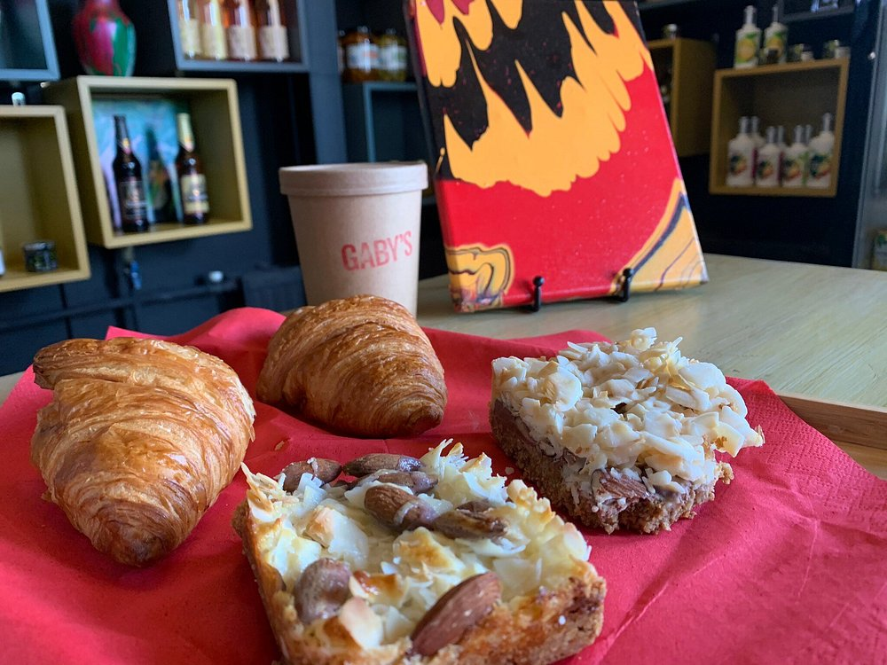
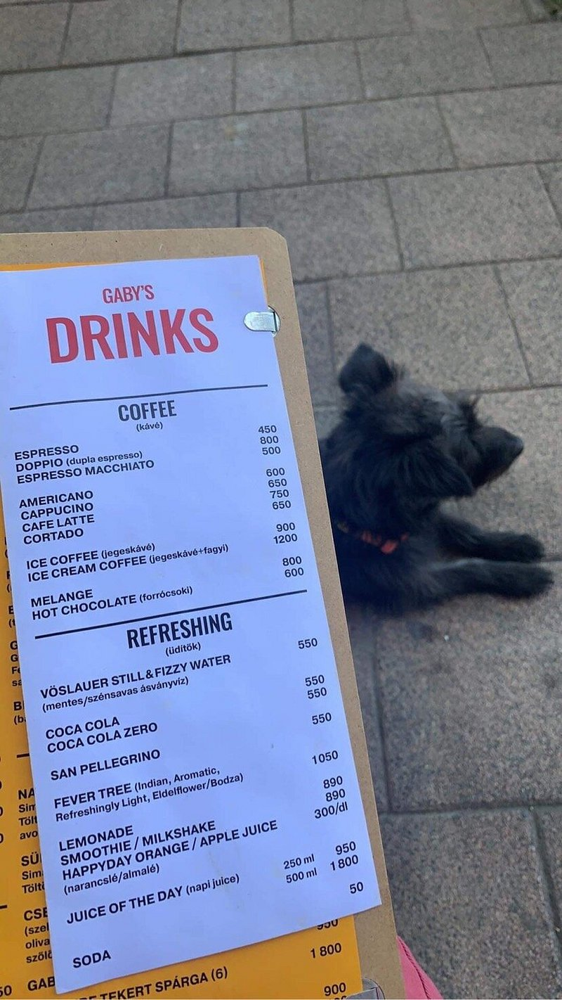

Avokádós salátatál
Friss zöldek, paradicsom, kukorica, avokádó és könnyed, napfényes összhatás.
Budapesti brunch spot újragondolva
Ez a demo koncepció a Gaby's Budapest karakterére épül: erős tipográfia, meleg színek, gyors mobilos élmény és egy olyan vibe, amit jó érzés elküldeni bárkinek.



Kedvenc fogások
A főoldal itt nem csak informál, hanem hangulatot is ad. Ez különösen fontos egy brunch helynek.
Friss zöldek, paradicsom, kukorica, avokádó és könnyed, napfényes összhatás.
Laza city brunch hangulat, pirítós, saláta és egy tányér, ami azonnal megállít scroll közben.
Édes-sós comfort food modern tálalással és erős vizuális karakterrel.

Nem steril éttermi érzés, hanem laza, fiatalos, “ide beülnénk most” atmoszféra.

Reggelihez, gyors találkozókhoz és azokhoz, akik először a hangulatba szeretnek bele.
Miért működik ez
A dizájn direkt fiatalosabb lett: nagy címek, erős színblokkok, üvegszerű kártyák és dinamikus képkezelés.
A cél az, hogy a látogató 5 másodperc alatt értse: ez egy karakteres, trendi budapesti hely, ahova jó beülni.

Kapcsolat